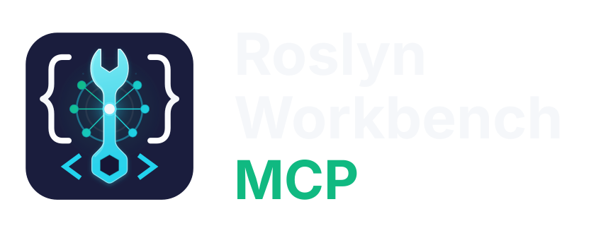

01 / CODE ACTIONS{ }
Real fixes. Real refactorings.
Discover context-appropriate compiler and analyzer fixes, supported refactorings, and Fix All operations through Roslyn's own providers.
ROSLYN CODE ACTIONS

LOCAL ROSLYN MCP SERVER / C# & .NET
Give your AI coding agent the same compiler-powered intelligence behind Visual Studio. Discover real C# fixes and refactorings, inspect the changes, and decide when they’re written.
✓ Open source / MIT ·✓ Runs locally ·✓ Inspection-only by default
01 / WHY ROSLYN WORKBENCH
Text-based edits can look right without understanding symbols, overloads or compiler diagnostics. Roslyn Workbench connects your agent to the .NET Compiler Platform so it can inspect the real structure of a C# solution and discover applicable Code Actions.
Explore Code Actions02 / CAPABILITIES
Built for C# workflows where compiler semantics matter and source changes deserve review.
Discover context-appropriate compiler and analyzer fixes, supported refactorings, and Fix All operations through Roslyn's own providers.
Locate symbol definitions, references, implementations, type hierarchies, callers and callees with compiler-aware precision.
Inspect diagnostics, nullability, async behaviour, control flow, public APIs and potential change impact without loading entire solutions into context.
Stage source changes, inspect a diff, detect conflicts and roll back. Nothing writes source files until an explicit transaction commit.
03 / THE WORKFLOW
Your agent can discover and prepare changes without immediately changing your source files.
Resolve a symbol for renaming or discover applicable Code Actions.
Stage the selected operation inside a transaction.
Inspect the resulting diff and decide what happens next.
Write the reviewed changes explicitly, or discard them.
04 / GET STARTED
Runs locally with a supported .NET 10 SDK. Connect any MCP client that supports local stdio servers and start in inspection-only mode.
Run the latest published stable version:
dnx Lantean.Roslyn.Workbench.Mcp@1.2.0 --yes -- --versionLatest stable release: 1.2.0. The command pins that published version; for permanent installation and client configuration, see the getting started guide.
OPEN SOURCE / BUILT BY LANTEAN CODE
Real C# semantics, reviewable changes, and your development workflow still in your control.